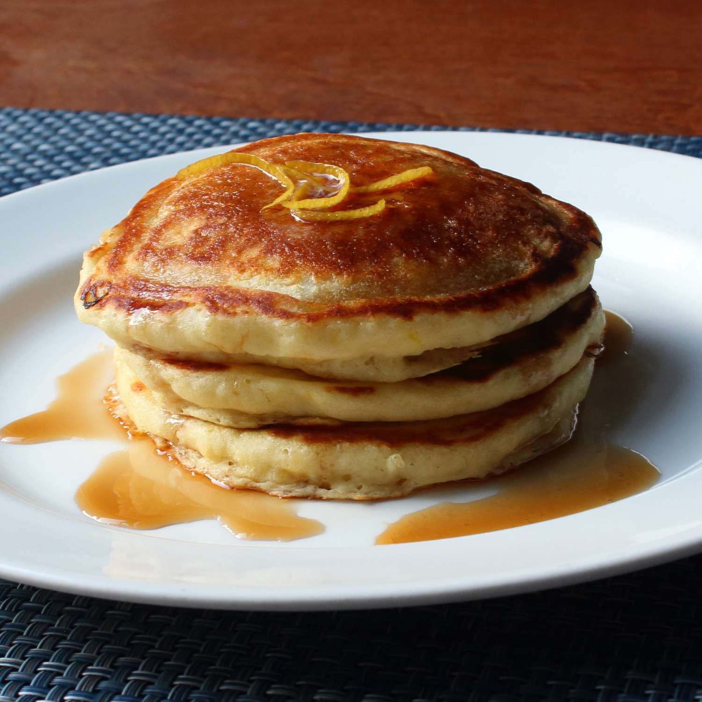

Sweet and Zesty Lemon Ricotta Pancakes

Description
These lemon ricotta pancakes are light, fluffy, and full of flavor. They are the perfect breakfast treat for a special occasion or just a lazy weekend morning. The ricotta cheese adds a creamy texture, while the lemon zest gives them a bright, citrusy flavor. Serve them with maple syrup and fresh berries for a delicious and satisfying meal.
Ingredients
- 3/4 cup cold water or milk
- 1/2 teaspoon baking soda
- 1/2 cup ricotta cheese
- 1 large egg
- 1 tablespoon grated lemon zest
- 1 tablespoon vegetable oil
- 1 tablespoon white sugar
- 1/8 teaspoon vanilla extract
- 1 cup self-rising flour
- 2 tablespoons self-rising flour
- 2 tablespoons melted butter
- 1 tablespoons lemon juice
Instructions
- Whisk cold water and baking soda in a mixing bowl. Add ricotta cheese, egg, lemon zest, vegetable oil, sugar, and vanilla; whisk until smooth, breaking up lumps of cheese as you mix.
- Whisk in 1 cup plus 2 tablespoons self-rising flour, melted butter, and lemon juice until most of flour disappears into batter. Let batter sit at room temperature for 15 minutes.
- Heat a lightly oiled griddle over medium-high heat.
- Drop batter by large spoonfuls onto the hot griddle and cook until bubbles form and the edges are dry, 2 to 3 minutes. Flip and cook until browned on the other side, 2 to 3 minutes. Repeat with remaining batter.
- Serve the pancakes warm with maple syrup and berries. Enjoy!
Back to Home